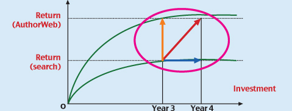

Request for Proposals
Winton, self-funded to date, is seeking a Series A-Round to monetize our technologies by launching a bilingual English/Russian AuthorWeb beta due in 2009. This will be followed by a Series-B funding event in Q4 2009. These funds will be used for additional hiring in both our product development and marketing staffs to launch full multilingual AuthorWeb in 2010. We anticipate achieving profitability in Q3 of 2010. This is an investment in the future Web instead of funding countless search engine clones.
Current management team intends to retain control of Winton’s decisions. We are building a strong, profitable, and complete company, with the possibility of an IPO event in the future. We would, however, entertain any serious discussions, such as an acquisition or merger with another company.
We are seeking an investor who can help us launch our technology in the US and internationally, and also establish partnerships with major search engines, social networks and Web advertising companies. Our intention is to use their text repositories to establish analytic networks for communication of ideas/thoughts and sharing the ads revenue. Ads will be placed as fragments among the thoughts retrieved and exchanged by the users. Ad targeting will be much more precise at the level of fragments than it is now at the level of documents.